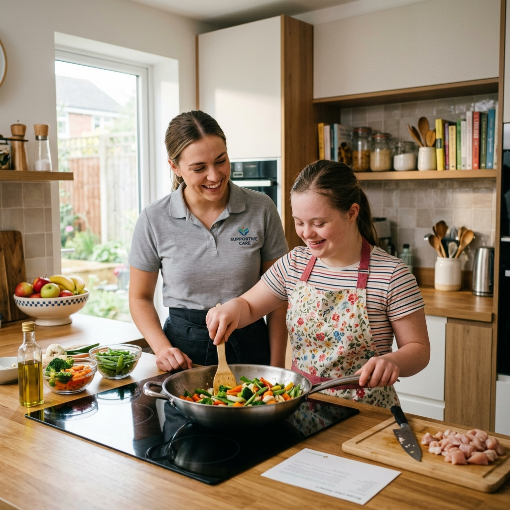

Supported Living
At Care Solutions Hub, we support individuals with Learning Disabilities and Autism Spectrum Disorder to live independently in their own homes, receiving the right care tailored to their needs. We believe that choosing where and with whom you live is fundamental to having control over your life.

Support shaped entirely around you
Daily Living
Cooking, cleaning, budgeting and managing a home — supported at your own pace.
Personal Care
Dignified, respectful support with personal care needs, exactly as much as you want.
Health & Wellbeing
Coordinating appointments, medication and routines that keep you well.
Community Life
Staying connected to friends, family and the activities that matter to you.

Designed for real independence, not a fixed model of care
- Adults with learning disabilities who want to live independently.
- Autistic adults who benefit from consistent, familiar, person-centred support.
- People transitioning from family homes, residential care or hospital settings.
- Anyone who wants a genuine say in where they live, who supports them, and how.
Supported living, answered plainly
No. Supported living enables people to live in their own home, usually under their own tenancy, while receiving support tailored to their individual needs. Unlike residential care, individuals have greater choice, independence, and control over their daily lives.
Absolutely. We encourage families, friends, and loved ones to remain actively involved in the person's care and support journey. We work collaboratively to ensure everyone feels informed, involved, and supported, while always respecting the individual's wishes and choices.
Every support plan begins with a personalised assessment to understand the individual's needs, preferences, goals, and aspirations. We work closely with the individual, their family, and relevant professionals to create a person-centred support plan, which is reviewed regularly to ensure it continues to meet changing needs.
We are based in Tunbridge Wells and currently provide supported living services across Kent,Surrey,London,Dartford,Hampshire and surrounding areas. Please get in touch to discuss your location and we'll be happy to advise whether we can support you.
Ready to talk about supported living?
Whether you're exploring options for yourself or a loved one, we're happy to answer questions with no obligation.